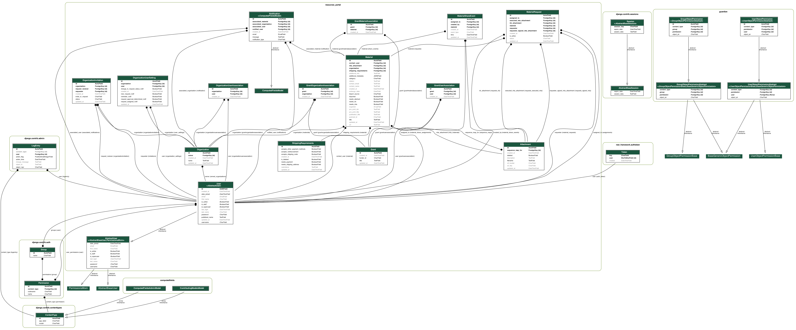

resources_portal


Resources Portal. Check out the project's documentation.
Prerequisites
Optional
You can run the rportal command with ./bin/rportal from the root directory of this project.
Optionally you can add this project's /bin folder to your path and then call it directly.
Initialize the project
Start the dev server for local development:
rportal up
Create a superuser to login to the admin:
rportal createsuperuser
Making migrations
rportal makemigrations
Visualizing the data model
This project includes django-extensions graph_models command.
rportal graph-models
At the moment png exports are not setup but these can be generated from the .dot file.
(Either with dot -Tpng model.dot -o database_diagram.png or https://convertio.co/dot-png/)
